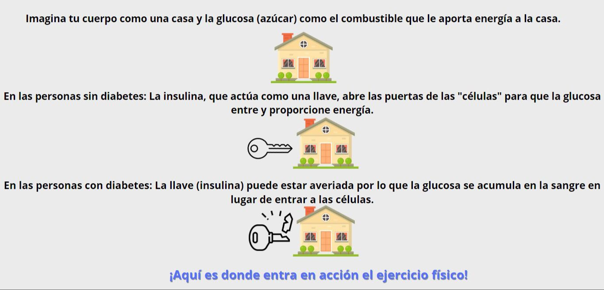

¿Por qué realizar ejercicio físico es importante?
Actúa como una llave extra: Abre las puertas de las células para que ingrese más glucosa, incluso si la insulina no funciona del todo bien.
Ayuda a que tu cuerpo utilice la glucosa de manera más eficiente: Reduce la cantidad de glucosa en la sangre y mejora el control de la diabetes
Fortalece tus músculos: Brinda a tu cuerpo más "habitaciones" para almacenar glucosa, lo que también ayuda a controlar los niveles de azúcar en sangre.
Te ayuda a bajar de peso o mantener un peso saludable: Si tienes sobrepeso u obesidad, bajar incluso una pequeña cantidad de peso puede mejorar mucho el control de la diabetes.
Reduce el riesgo de enfermedades cardíacas, accidentes cerebrovasculares y otras complicaciones de la diabetes: El ejercicio te ayuda a mantener tu corazón y tus vasos sanguíneos sanos, lo que reduce el riesgo de estas complicaciones graves.
Mejora tu estado de ánimo y reduce el estrés: El ejercicio libera endorfinas, las cuales son sustancias químicas que te hacen sentir bien y pueden ayudarte a lidiar con el estrés, un factor que puede empeorar la diabetes